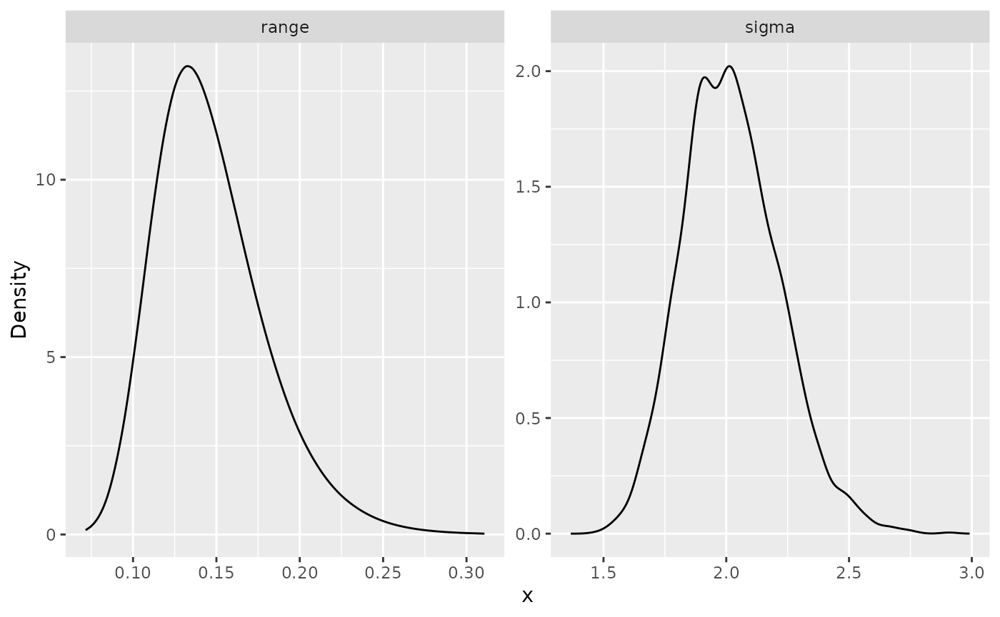
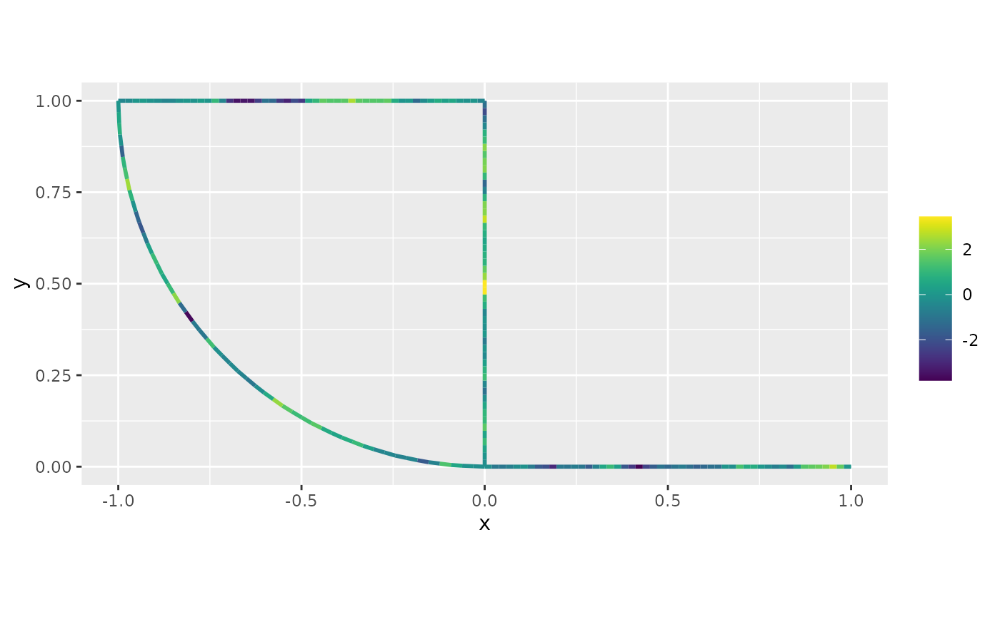
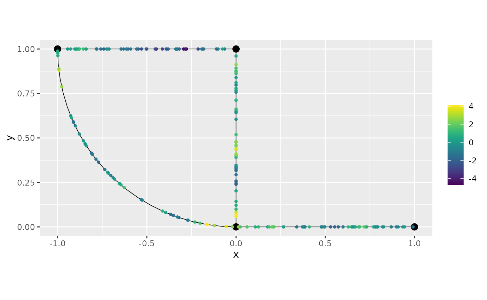

inlabru interface of Whittle--Matérn fields
David Bolin, Alexandre B. Simas, and Jonas Wallin
2023-09-26
Source:vignettes/inlabru_interface.Rmd
inlabru_interface.RmdIntroduction
In this vignette we will present our inlabru interface
to Whittle–Matérn fields. The underlying theory for this approach is
provided in Bolin, Simas, and Wallin (2023a) and Bolin,
Simas, and Wallin (2023b).
For an introduction to the metric_graph class, please
see the Working with metric graphs
vignette.
For our R-INLA interface, see the INLA interface of Whittle–Matérn fields
vignette.
In the Gaussian random fields on metric
graphs vignette, we introduce all the models in metric graphs
contained in this package, as well as, how to perform statistical tasks
on these models, but without the R-INLA or
inlabru interfaces.
We will present our inlabru interface to the
Whittle-Matérn fields by providing a step-by-step illustration.
The Whittle–Matérn fields are specified as solutions to the stochastic differential equation \[ (\kappa^2 - \Delta)^{\alpha} \tau u = \mathcal{W} \] on the metric graph \(\Gamma\). We can work with these models without any approximations if the smoothness parameter \(\alpha\) is an integer, and this is what we focus on in this vignette. For details on the case of a general smoothness parameter, see Whittle–Matérn fields with general smoothness.
A toy dataset
Let us begin by loading the MetricGraph package and
creating a metric graph:
library(MetricGraph)
library(sp)
line1 <- Line(rbind(c(0,0),c(1,0)))
line2 <- Line(rbind(c(0,0),c(0,1)))
line3 <- Line(rbind(c(0,1),c(-1,1)))
theta <- seq(from=pi,to=3*pi/2,length.out = 20)
line4 <- Line(cbind(sin(theta),1+ cos(theta)))
Lines = sp::SpatialLines(list(Lines(list(line1),ID="1"),
Lines(list(line2),ID="2"),
Lines(list(line4),ID="3"),
Lines(list(line3),ID="4")))
graph_bru <- metric_graph$new(lines = Lines)Let us add 50 random locations in each edge where we will have observations:
obs_per_edge <- 50
obs_loc <- NULL
for(i in 1:(graph_bru$nE)) {
obs_loc <- rbind(obs_loc,
cbind(rep(i,obs_per_edge),
runif(obs_per_edge)))
}We will now sample in these observation locations and plot the latent field:
sigma <- 2
alpha <- 1
nu <- alpha - 0.5
r <- 0.15 # r stands for range
u <- sample_spde(range = r, sigma = sigma, alpha = alpha,
graph = graph_bru, PtE = obs_loc)
graph_bru$plot(X = u, X_loc = obs_loc)
Let us now generate the observed responses, which we will call
y. We will also plot the observed responses on the metric
graph.
n_obs <- length(u)
sigma.e <- 0.1
y <- u + sigma.e * rnorm(n_obs)
graph_bru$plot(X = y, X_loc = obs_loc)
inlabru implementation
We will now present our inlabru implementation of the
Whittle-Matérn fields for metric graphs. It has the advantage, over our
R-INLA implementation, of not requiring the user to provide
observation matrices, indices nor stack objects.
We are now in a position to fit the model with our
inlabru implementation. To this end, we need to add the
observations to the graph, which we will do with the
add_observations() method.
# Creating the data frame
df_graph <- data.frame(y = y, edge_number = obs_loc[,1],
distance_on_edge = obs_loc[,2])
# Adding observations and turning them to vertices
graph_bru$add_observations(data = df_graph, normalized=TRUE)
graph_bru$plot(data="y")
Now, we load INLA and inlabru packages. We
will also need to create the inla model object with the
graph_spde function. By default we have
alpha=1.
library(INLA)
library(inlabru)
spde_model_bru <- graph_spde(graph_bru)Now, we create inlabru’s component, which is a
formula-like object. The index parameter in inlabru is not
used in our implementation, thus, we replace it by the repl
argument, which tells which replicates to use. If there is no
replicates, we supply NULL.
cmp <-
y ~ -1 + Intercept(1) + field(loc,
model = spde_model_bru)Now, we directly fit the model:
spde_bru_fit <-
bru(cmp, data=graph_data_spde(spde_model_bru, loc = "loc"))## Warning in inla.model.properties.generic(inla.trim.family(model), mm[names(mm) == : Model 'cgeneric' in section 'latent' is marked as 'experimental'; changes may appear at any time.
## Use this model with extra care!!! Further warnings are disabled.Let us now obtain the estimates in the original scale by using the
spde_metric_graph_result() function, then taking a
summary():
spde_bru_result <- spde_metric_graph_result(spde_bru_fit,
"field", spde_model_bru)
summary(spde_bru_result)## mean sd 0.025quant 0.5quant 0.975quant mode
## sigma 1.6472200 0.1328360 1.4047400 1.6403500 1.922200 1.6039000
## range 0.0866407 0.0172411 0.0582338 0.0847289 0.125718 0.0809224We will now compare the means of the estimated values with the true values:
result_df_bru <- data.frame(
parameter = c("std.dev", "range"),
true = c(sigma, r),
mean = c(
spde_bru_result$summary.sigma$mean,
spde_bru_result$summary.range$mean
),
mode = c(
spde_bru_result$summary.sigma$mode,
spde_bru_result$summary.range$mode
)
)
print(result_df_bru)## parameter true mean mode
## 1 std.dev 2.00 1.6472227 1.60390430
## 2 range 0.15 0.0866407 0.08092243We can also plot the posterior marginal densities with the help of
the gg_df() function:
posterior_df_bru_fit <- gg_df(spde_bru_result)
library(ggplot2)
ggplot(posterior_df_bru_fit) + geom_line(aes(x = x, y = y)) +
facet_wrap(~parameter, scales = "free") + labs(y = "Density")
Kriging with the inlabru implementation
Unfortunately, our inlabru implementation is not
compatible with inlabru’s predict() method.
This has to do with the nature of the metric graph’s object.
To this end, we have provided a different predict()
method. We will now show how to do kriging with the help of this
function.
We begin by creating a data list with the positions we want the predictions. In this case, we will want the predictions on a mesh.
Let us begin by obtaining an evenly spaced mesh with respect to the base graph:
obs_per_edge_prd <- 50
graph_bru$build_mesh(n = obs_per_edge_prd)Let us plot the resulting graph:
graph_bru$plot(mesh=TRUE)
The positions we want are the mesh positions, which can be obtained
by using the get_mesh_locations() method. We also set
bru=TRUE and loc="loc" to obtain a data list
suitable to be used with inlabru.
data_list <- graph_bru$get_mesh_locations(bru = TRUE,
loc = "loc")We can now obtain the predictions by using the predict()
method. Observe that our predict() method for graph models
is a bit different from inlabru’s standard
predict() method. Indeed, the first argument is the model
created with the graph_spde() function, the second is
inlabru’s component, and the remaining is as done with the
standard predict() method in inlabru.
field_pred <- predict(spde_model_bru,
cmp,
spde_bru_fit,
data = data_list,
formula = ~field)## Warning: The `data` argument of `predict()` is deprecated as of inlabru 2.8.0.
## ℹ Please use the `newdata` argument instead.
## ℹ `data` provided but not `newdata`. Setting `newdata <- data`.
## ℹ The deprecated feature was likely used in the MetricGraph package.
## Please report the issue at
## <https://github.com/davidbolin/MetricGraph/issues>.
## This warning is displayed once every 8 hours.
## Call `lifecycle::last_lifecycle_warnings()` to see where this warning was
## generated.Finally, we can plot the predictions together with the data:
plot(field_pred)
We can also obtain a 3d plot by setting plotly to
TRUE:
plot(field_pred, plotly = TRUE)Fitting inlabru models with replicates
We will now illustrate how to use our inlabru
implementation to fit models with replicates.
To simplify exposition, we will use the same base graph. So, we begin by clearing the observations:
graph_bru$clear_observations()We will use the same observation locations as for the previous cases. Let us sample 30 replicates:
sigma_rep <- 1.5
alpha_rep <- 1
nu_rep <- alpha_rep - 0.5
r_rep <- 0.2 # r stands for range
n_repl <- 30
u_rep <- sample_spde(range = r_rep, sigma = sigma_rep,
alpha = alpha_rep,
graph = graph_bru, PtE = obs_loc,
nsim = n_repl)Let us now generate the observed responses, which we will call
y_rep.
n_obs_rep <- nrow(u_rep)
sigma_e <- 0.1
y_rep <- u_rep + sigma_e * matrix(rnorm(n_obs_rep * n_repl),
ncol=n_repl)We can now add the the observations by setting the group
argument to repl:
dl_rep_graph <- lapply(1:ncol(y_rep), function(i){data.frame(y = y_rep[,i],
edge_number = obs_loc[,1],
distance_on_edge = obs_loc[,2],
repl = i)})
dl_rep_graph <- do.call(rbind, dl_rep_graph)
graph_bru$add_observations(data = dl_rep_graph, normalized=TRUE,
group = "repl")By definition the plot() method plots the first
replicate. We can select the other replicates with the
group argument. See the Working with metric graphs for more
details.
graph_bru$plot(data="y")
Let us plot another replicate:
graph_bru$plot(data="y", group=2)
Let us now create the model object:
spde_model_bru_rep <- graph_spde(graph_bru)Let us first create a model using the replicates 1, 3, 5, 7 and 9. To
this end, we provide the vector of the replicates we want as the
input argument to the field. We created a
helper function, namely bru_graph_rep() to help building
this vector:
repl <- bru_graph_rep(c(1,3,5,7,9), spde_model_bru_rep)
cmp_rep <-
y ~ -1 + Intercept(1) + field(loc,
model = spde_model_bru_rep,
replicate = repl)Now, we fit the model, by setting the repl argument to
the replicates we want inside the graph_data_spde()
function:
spde_bru_fit_rep <-
bru(cmp_rep,
data=graph_data_spde(spde_model_bru_rep, loc = "loc",
repl=c(1,3,5,7,9)))Let us see the estimated values in the original scale:
spde_result_bru_rep <- spde_metric_graph_result(spde_bru_fit_rep,
"field", spde_model_bru_rep)
summary(spde_result_bru_rep)## mean sd 0.025quant 0.5quant 0.975quant mode
## sigma 1.559830 0.0809618 1.409750 1.556260 1.73015 1.556250
## range 0.223537 0.0267187 0.176471 0.221607 0.28128 0.217299Let us compare with the true values:
result_df_bru_rep <- data.frame(
parameter = c("std.dev", "range"),
true = c(sigma_rep, r_rep),
mean = c(
spde_result_bru_rep$summary.sigma$mean,
spde_result_bru_rep$summary.range$mean
),
mode = c(
spde_result_bru_rep$summary.sigma$mode,
spde_result_bru_rep$summary.range$mode
)
)
print(result_df_bru_rep)## parameter true mean mode
## 1 std.dev 1.5 1.559829 1.5562453
## 2 range 0.2 0.223537 0.2172991We will now show how to fit the model considering all replicates. To
this end, we simply set the argument in bru_graph_rep()
function to __all.
repl <- bru_graph_rep("__all", spde_model_bru_rep)
cmp_rep <-
y ~ -1 + Intercept(1) + field(loc,
model = spde_model_bru_rep,
replicate = repl)Similarly, we fit the model, by setting the repl
argument to “__all” inside the graph_data_spde()
function:
spde_bru_fit_rep <-
bru(cmp_rep,
data=graph_data_spde(spde_model_bru_rep,
loc = "loc",
repl="__all"))Let us see the estimated values in the original scale:
spde_result_bru_rep <- spde_metric_graph_result(spde_bru_fit_rep,
"field", spde_model_bru_rep)
summary(spde_result_bru_rep)## mean sd 0.025quant 0.5quant 0.975quant mode
## sigma 1.486570 0.0308669 1.423350 1.48777 1.544580 1.492200
## range 0.190578 0.0088579 0.172558 0.19089 0.207259 0.192361Let us compare with the true values:
result_df_bru_rep <- data.frame(
parameter = c("std.dev", "range"),
true = c(sigma_rep, r_rep),
mean = c(
spde_result_bru_rep$summary.sigma$mean,
spde_result_bru_rep$summary.range$mean
),
mode = c(
spde_result_bru_rep$summary.sigma$mode,
spde_result_bru_rep$summary.range$mode
)
)
print(result_df_bru_rep)## parameter true mean mode
## 1 std.dev 1.5 1.4865682 1.4922046
## 2 range 0.2 0.1905778 0.1923614